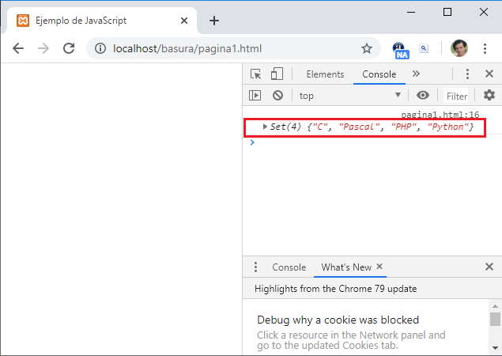

Listado completo de tutoriales
ES6 - Set |
Hemos visto en conceptos anteriores que JavaScript implementa los siguientes objetos:
Con ES6 se presenta el objeto llamado 'Set' que nos evita tener que implementar desde cero una estructura de datos tipo conjunto.
El objeto 'Set' permite almacenar una colección de elementos que pueden ser de tipo primitivo u objeto y que no se pueden repetir.
Podemos crear un Set vacío y posteriormente añadir elementos al conjunto mediante el método 'add':
<!DOCTYPE html>
<html>
<head>
<title>Ejemplo de JavaScript</title>
<meta charset="UTF-8">
</head>
<body>
<script>
const conjunto1 = new Set();
conjunto1.add("C");
conjunto1.add("Pascal");
conjunto1.add("PHP");
conjunto1.add("Python");
console.log(conjunto1);
</script>
</body>
</html>
Utilizamos el método log del objeto console para mostrar el contenido del mapa (recordar que en Chrome y FireFox debemos presionar la tecla 'F12' para que se muestre la ventana de la console):
Podemos crear un Set e inmediatamente pasar los datos iniciales en el constructor del mismo mediante un arreglo:
<script>
const conjunto1 = new Set(["C", "Pascal", "PHP", "Python"]);
console.log(conjunto1);
</script>
Disponemos del método 'has' que nos retorna si el conjunto almacena un determinado valor.
Problema
Generar 10 números aleatorios comprendidos entre 1 y 50. Almacenar los mismos en un Set. Verificar luego si el conjunto tiene el valor 12.
<!DOCTYPE html>
<html>
<head>
<title>Ejemplo de JavaScript</title>
<meta charset="UTF-8">
</head>
<body>
<script>
const conjunto1 = new Set();
for (let x = 0; x < 10; x++)
conjunto1.add(parseInt(Math.random() * 50) + 1);
document.write(`La cantidad de números aleatorios distintos son ${conjunto1.size}<br>`)
if (conjunto1.has(12))
document.write("Si se generó el número 12")
else
document.write("No se generó el número 12")
</script>
</body>
Como un conjunto no puede almacenar valores repetidos luego si queremos saber la cantidad de números aleatorios distintos debemos acceder a la propiedad 'size' del 'Set':
document.write(`La cantidad de números aleatorios distintos son ${conjunto1.size}<br>`)
El método 'has' retorna true si el conjunto almacena el dato que le pasamos como parámetro:
if (conjunto1.has(12))
Podemos eliminar elementos mediante el método 'delete':
<script>
const conjunto1 = new Set(["C", "Pascal", "PHP", "Python"]);
console.log(conjunto1.size); // 4
conjunto1.delete("Pascal");
console.log(conjunto1.size); // 3
</script>
El método 'delete' retorna true si se eliminó la entrada en el Set y false en caso que le hayamos pasado un valor que no exista.
Para eliminar todos los elementos del conjunto disponemos del método 'clear':
<script>
const conjunto1 = new Set(["C", "Pascal", "PHP", "Python"]);
console.log(conjunto1.size); // 4
conjunto1.clear();
console.log(conjunto1.size); // 0
</script>
Los elementos almacenado en el 'Set' mantienen el orden en que se agregaron.
Podemos recorrer un 'Set' mediante la estructura repetitiva 'for of':
<!DOCTYPE html>
<html>
<head>
<title>Ejemplo de JavaScript</title>
<meta charset="UTF-8">
</head>
<body>
<script>
const conjunto1 = new Set(["C", "Pascal", "PHP", "Python"]);
for (let elemento of conjunto1)
document.write(`${elemento}<br>`);
</script>
</body>
</html>
Al ejecutar el algoritmo podemos ver como recorrer el conjunto y recuperar en forma individual cada uno de los elementos que conforman el 'Set'.
El objeto Set igual que los objetos Array y Map dispone de un método 'forEach' para iterar sobre los elementos del 'Set':
<script>
const conjunto1 = new Set(["C", "Pascal", "PHP", "Python"]);
conjunto1.forEach((elemento) => document.write(`${elemento}<br>`));
</script>